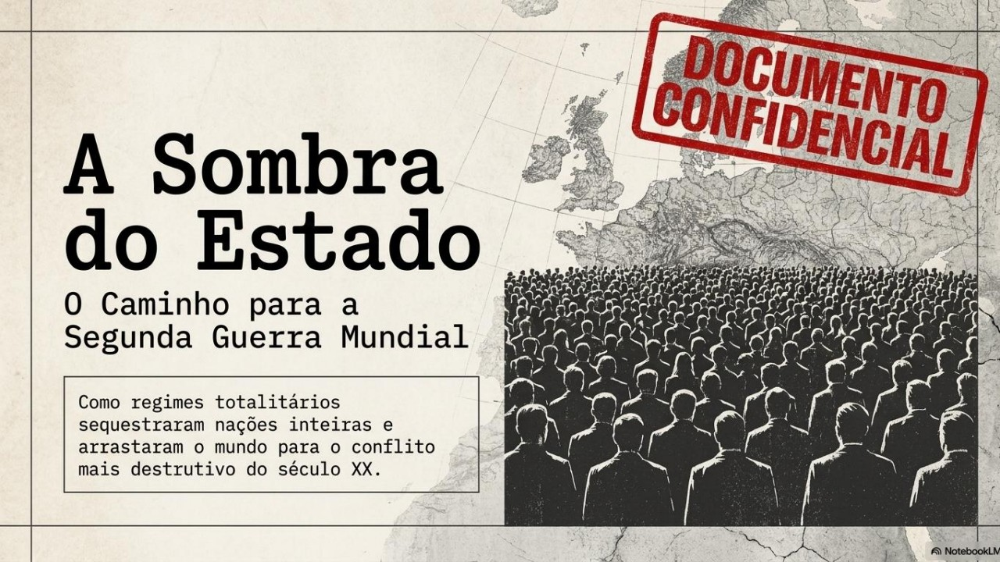
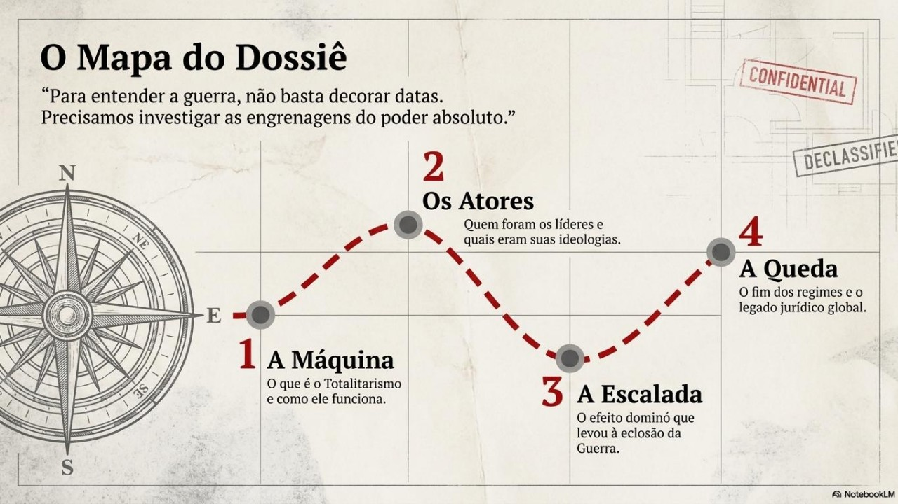
Resumo da aula: Totalitarismo e a 2ª Guerra Mundial
Antes de começar, assista a este vídeo com o resumo dos principais pontos que serão estudados neste tema — um bom ponto de partida para organizar as ideias antes da leitura.
Assistir no YouTube ↗O que é um Estado Totalitário?
Antes de estudar cada regime, é preciso entender o que os une: um modelo de poder que não se contenta em governar, mas busca controlar todas as dimensões da vida social.
Imagine um governo que não se contenta em cuidar de leis, impostos e fronteiras — um governo que também quer decidir o que você lê, o que aprende na escola, o que sua família pode dizer em casa e até em quem você deve confiar. É mais ou menos essa a ideia por trás de um Estado totalitário: um regime político que tenta controlar totalmente a vida das pessoas, não só a política, mas também a economia, a cultura, a educação e a vida privada.
Isso é diferente de uma ditadura "comum". Uma ditadura reprime quem se opõe ao governo, mas normalmente não se importa em controlar cada detalhe do cotidiano das pessoas. Já o totalitarismo vai além: ele quer moldar mentes, formando cidadãos inteiramente fiéis ao regime desde a infância — nas escolas, nas juventudes partidárias, nos meios de comunicação.
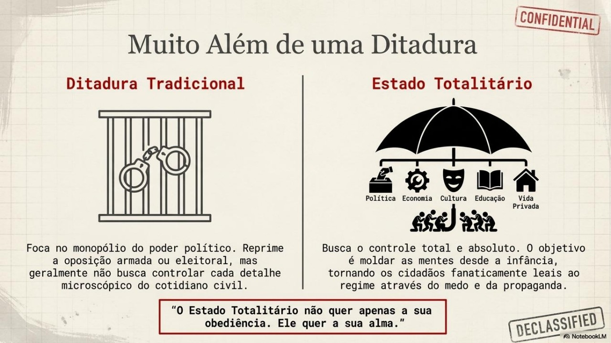
Apesar de terem surgido em países muito diferentes, os regimes totalitários do século XX compartilhavam algumas características em comum:
- Partido único no poder, com um líder concentrando decisões (o Führer alemão, o Duce italiano, o Secretário-Geral soviético, o imperador japonês);
- Culto à personalidade: o líder é apresentado, pela propaganda, como um "salvador" da nação, quase infalível;
- Propaganda estatal massiva, controlando jornais, rádio, cinema e livros escolares;
- Polícia política e vigilância constante, perseguindo qualquer sinal de discordância;
- Nacionalismo exacerbado (ou, no caso soviético, uma ideologia de classe) usado para justificar sacrifícios da população;
- Economia controlada pelo Estado, voltada ao rearmamento e à preparação para a guerra.
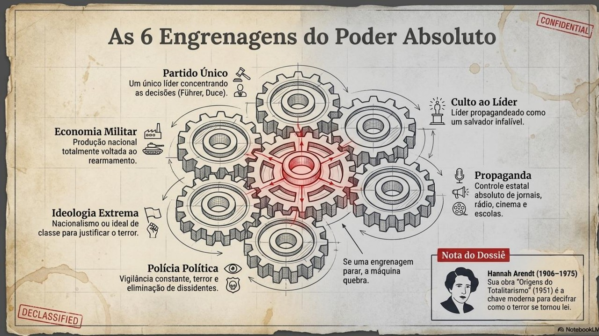
Filósofa alemã que viveu o período do nazismo e precisou fugir da perseguição aos judeus. Sua obra Origens do totalitarismo (1951) é até hoje uma das principais referências para entender como esses regimes conseguiram controlar milhões de pessoas — inclusive convencendo parte delas a apoiar o próprio regime.
Guarde essa ideia: veremos, a seguir, quatro regimes totalitários — o fascismo na Itália, o nazismo na Alemanha, o stalinismo na União Soviética e o militarismo no Japão. Eles tinham ideologias diferentes e, em 1939, ficariam em lados opostos da guerra — mas todos compartilhavam esse mesmo projeto de controle absoluto sobre a sociedade.
📝 Atividades de fixação
Reforce o que você acabou de estudar com os textos de apoio e as questões dissertativas abaixo.
Texto de apoio e 6 questões dissertativas.
Texto de apoio e 5 questões dissertativas.
O Contexto de Ascensão: por que a Europa se voltou ao autoritarismo?
Os regimes totalitários não surgiram do nada. Eles se aproveitaram de crises profundas que as democracias liberais não conseguiram resolver.
Ao final da Primeira Guerra Mundial (1918), a economia de boa parte da Europa estava destroçada. Enquanto os países vencedores receberam compensações financeiras, os derrotados — como a Alemanha — não conseguiram encontrar uma saída rápida para a crise. E, em 1929, a situação piorou ainda mais: a quebra da Bolsa de Valores de Nova York gerou uma crise que se espalhou pelo mundo todo.
Herança da 1ª Guerra
O Tratado de Versalhes (1919) impôs à Alemanha perda de territórios e colônias, redução drástica de suas Forças Armadas e o pagamento de pesadas indenizações aos vencedores. Os alemães consideravam o tratado profundamente humilhante.
Crise de 1929
A quebra da Bolsa de Nova York interrompeu os empréstimos e investimentos que os Estados Unidos vinham fazendo na Europa. O desemprego em massa e a fome se espalharam, minando a confiança nos governos liberais.
Medo do comunismo
Depois da Revolução Russa de 1917, setores da classe média e da grande burguesia europeia temiam que a crise abrisse caminho para revoluções socialistas — e por isso passaram a apoiar propostas autoritárias, vistas como um "escudo" contra o comunismo.
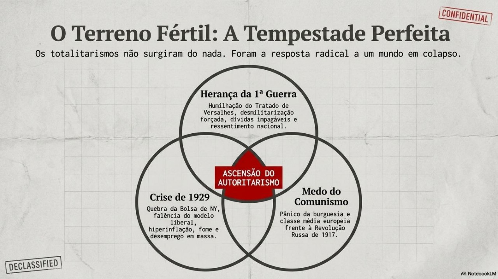
Diante disso, a Europa viveu uma forte polarização política: de um lado, trabalhadores e intelectuais que denunciavam o capitalismo como responsável pela crise e defendiam a revolução socialista; de outro, setores conservadores que, com medo dessa revolução, apoiaram a instalação de regimes totalitários. Foi exatamente nesse cenário de crise e polarização que o fascismo se instalou na Itália e o nazismo, na Alemanha.
O Fascismo Italiano
O primeiro dos regimes totalitários do século XX, criado por Benito Mussolini a partir de 1922.
Depois da Primeira Guerra, a economia italiana também se deteriorou: empresas fecharam e o desemprego disparou. Some-se a isso o drama das perdas humanas no conflito — a Itália havia enviado tropas para lutar ao lado dos vencedores, mas contabilizou cerca de 500 mil mortos e 400 mil mutilados, sem receber, na visão de muitos italianos, compensações territoriais à altura desse sacrifício.
Nesse cenário de crise e frustração, ex-combatentes, desempregados e ex-socialistas fundaram o Fasci di Combattimento, um grupo paramilitar liderado por Benito Mussolini, que combatia ao mesmo tempo os comunistas, a democracia liberal e as organizações operárias.
Grupo armado, geralmente fardado, organizado como se fosse um exército — mas que não pertence oficialmente às forças militares regulares de um país.
Em outubro de 1922, os fascistas organizaram a chamada Marcha sobre Roma: esquadrões conhecidos como Camisas Negras ocuparam pontos estratégicos pelo país e marcharam rumo à capital. Pressionado e temendo um confronto armado, o rei Vítor Emanuel III convocou Mussolini para assumir como primeiro-ministro — que logo passou a ser chamado de Duce ("o Condutor"). Como chefe de governo, Mussolini extinguiu os partidos de oposição, censurou a imprensa e criou uma polícia política para vigiar e punir opositores.
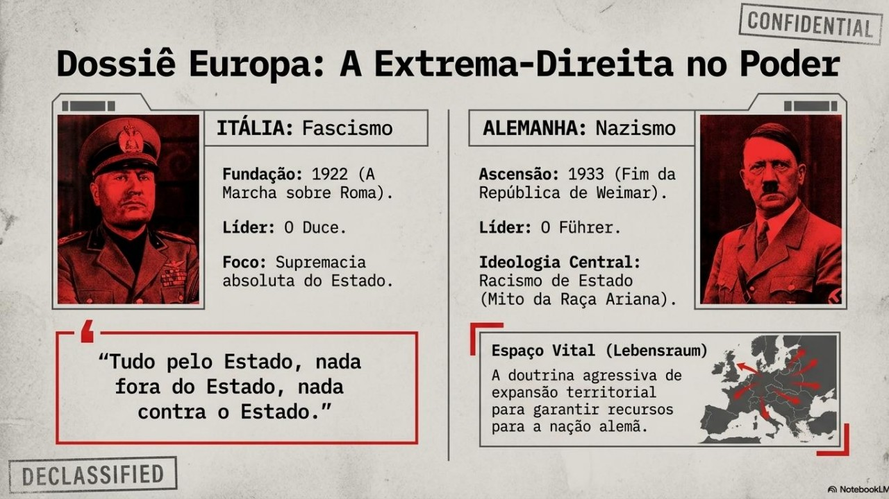
O fascismo pregava a superioridade do Estado sobre o indivíduo, resumida no lema "Tudo pelo Estado, nada fora do Estado, nada contra o Estado". Na economia, patrões e trabalhadores eram organizados em "corporações" sob supervisão estatal, o que eliminava greves e sindicatos independentes.
Mussolini também explorou a memória da Roma Antiga para justificar a expansão territorial — o sonho de reconstruir um "novo Império Romano" no Mediterrâneo e na África, que resultaria na invasão da Etiópia em 1935.
📝 Atividade de fixação
Reforce o que você acabou de estudar sobre o fascismo italiano com o texto de apoio e as questões dissertativas abaixo.
Texto de apoio e 4 questões dissertativas.
O Nazismo Alemão
O regime mais radical e o principal responsável por desencadear a Segunda Guerra Mundial na Europa.
Em novembro de 1918, ainda durante a Primeira Guerra, foi proclamada a República de Weimar na Alemanha — um governo democrático que negociou a paz e assinou o humilhante Tratado de Versalhes. Para pagar as pesadas indenizações de guerra, o governo alemão contraiu enormes dívidas, principalmente com os Estados Unidos, o que deixou a economia do país extremamente frágil.
Foi nesse cenário de crise que, em 1919, um pequeno grupo fundou o Partido Nacional Socialista dos Trabalhadores Alemães — o Partido Nazista. Sua doutrina proclamava a superioridade da chamada "raça ariana" e culpava, pela derrota alemã na guerra e pela crise econômica, três grandes inimigos: as potências vencedoras, os comunistas e os judeus.
Classificação sem nenhuma base científica, criada no século XIX, que os nazistas usaram para se referir aos povos germânicos, apresentados como fisicamente e moralmente "superiores" aos demais.
Com a crise de 1929, o desemprego industrial alemão chegou a 44% da população economicamente ativa — e o discurso nacionalista de Adolf Hitler ganhou cada vez mais apoiadores, inclusive entre trabalhadores, prometendo reforma agrária, nacionalização de grandes empresas e salários dignos. Em julho de 1932, o Partido Nazista venceu as eleições para o Reichstag (o Parlamento alemão) e, em janeiro de 1933, Hitler foi convidado a assumir a chefia do governo.
Menos de um mês depois, um incêndio no prédio do Reichstag serviu de pretexto para os nazistas decretarem estado de emergência, dissolverem o Parlamento e prenderem as principais lideranças de esquerda. Todos os partidos, exceto o nazista, foram proibidos: estava instalada a ditadura.
A ideologia nazista combinava expansionismo, militarismo, nacionalismo e racismo, resumidos em dois conceitos centrais:
- Pangermanismo: a ideia de que o Estado alemão deveria incorporar todos os territórios europeus habitados por populações de origem alemã, formando uma grande nação ariana;
- Espaço vital (Lebensraum): a crença de que os povos considerados "inferiores" deveriam ser dominados, garantindo território — principalmente no Leste Europeu — para que a "raça ariana" pudesse se expandir livremente.
Esse racismo de Estado logo virou lei: em 1935, as Leis de Nuremberg retiraram a cidadania dos judeus alemães e proibiram seu convívio com "arianos puros". Foi o primeiro grande passo institucional rumo às perseguições que culminariam no Holocausto — o extermínio sistemático de cerca de seis milhões de judeus durante a guerra.
O plano de Hitler: das Leis de Nuremberg à Noite dos Cristais
Vídeo da série "Segunda Guerra Mundial com Tom Hanks" (canal History Brasil), sobre como as Leis Raciais de Nuremberg e a violência da Noite dos Cristais marcaram os primeiros passos do plano nazista que culminaria no Holocausto.
Assistir no YouTube ↗Ideologia como motor da guerra
Note como, diferente de outros conflitos movidos por disputas de fronteira ou recursos, o nazismo transformou uma teoria racial em política de Estado — e essa teoria definiu quem seria aliado, quem seria conquistado e quem seria exterminado. É por isso que os historiadores dizem que a ideologia "guiou" a guerra, e não apenas a acompanhou.
Texto complementar
No trecho a seguir, Hannah Arendt discorre sobre o conceito de ideologia e sobre seu papel no totalitarismo:
O que as ideologias totalitárias visam, portanto, não é a transformação do mundo exterior ou a transformação revolucionária da sociedade, mas a transformação da própria natureza humana. Os campos de concentração constituem os laboratórios onde mudanças na natureza humana são testadas [...]; embora pareça que essas experiências não conseguem mudar o homem, mas apenas destruí-lo [...]. ARENDT, Hannah. Origens do totalitarismo: antissemitismo, imperialismo, totalitarismo. São Paulo: Companhia das Letras, 2004. p. 509-510.
📝 Atividade de fixação
Reforce o que você acabou de estudar sobre racismo, antissemitismo, xenofobia e a perseguição às pessoas com deficiência com os textos de apoio e as questões dissertativas abaixo.
Texto de apoio e 5 questões dissertativas.
Texto de apoio e 5 questões dissertativas.
O Stalinismo na União Soviética
Um totalitarismo de outra natureza ideológica — mas com mecanismos de controle surpreendentemente parecidos.
Após a morte de Lênin em 1924, Josef Stálin consolidou o poder na União Soviética, impondo um regime de partido único (o Partido Comunista) marcado por planejamento econômico centralizado, coletivização forçada da agricultura e industrialização acelerada.
A ditadura stalinista, que durou até a morte de Stálin em 1953, tinha características bem específicas — repare como algumas delas lembram o que você acabou de estudar sobre fascismo e nazismo, mesmo partindo de uma ideologia oposta:
- Partido único: qualquer suspeita de oposição era suficiente para que a pessoa fosse enviada aos Gulags, campos de trabalho forçado, muitos deles na Sibéria;
- Opressão às nacionalidades: povos não russos, como os ucranianos, eram obrigados a adotar o idioma russo e seguir as regras ditadas por Moscou;
- Burocracia privilegiada: uma elite de dirigentes do partido, militares e técnicos — a nomenklatura — concentrava benefícios que o restante da população não tinha;
- Culto à personalidade: a propaganda apresentava Stálin como "grande irmão" e "pai do povo";
- Julgamentos forjados: nos chamados "Expurgos" da década de 1930, opositores eram torturados até confessarem crimes que não haviam cometido e depois executados.
É importante perceber um ponto essencial: embora a URSS tenha lutado contra a Alemanha nazista na Segunda Guerra Mundial (integrando os Aliados a partir de 1941), isso não significa que o regime soviético fosse democrático. Isso mostra que o totalitarismo não é exclusividade de um único lado político — ele pode surgir tanto de ideologias de extrema-direita quanto de regimes que se apresentam como revolucionários de esquerda.
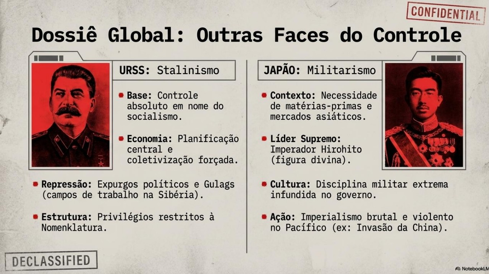
O Militarismo Japonês
Na Ásia, um regime de fundamentos diferentes seguiu o mesmo caminho de expansão territorial.
O expansionismo japonês vinha desde o final do século XIX, depois que a Revolução Meiji (1868) promoveu uma industrialização acelerada e transformou o Japão em uma potência militar na Ásia. Durante a década de 1930, o poder militar foi assumindo cada vez mais o controle do governo, sempre em nome do imperador Hirohito, tratado pela propaganda oficial como uma figura quase divina. O regime combinava disciplina militar extrema, culto ao imperador e um projeto de expansão territorial justificado pela necessidade de matérias-primas e mercados para a indústria japonesa.
Esse projeto expansionista levou à invasão da Manchúria, no norte da China, em setembro de 1931. Em 1936, Japão e Alemanha assinaram um pacto contra a expansão do comunismo soviético — uma aproximação que se fortaleceria nos anos seguintes. Em 1937, os japoneses atacaram a China novamente, dominando parte do território em uma guerra marcada por extrema violência contra civis. A ascensão do primeiro-ministro ultranacionalista Fumimaro Konoe, em 1940, consolidou de vez o militarismo no poder.
Ainda em 1940, já com a guerra em curso na Europa, o Japão assinou o Pacto Tripartite com a Alemanha nazista e a Itália fascista, formando oficialmente o Eixo. Pouco mais de um ano depois, em dezembro de 1941, o ataque japonês à base naval norte-americana de Pearl Harbor ampliou o conflito para o Oceano Pacífico e trouxe os Estados Unidos definitivamente para a guerra.
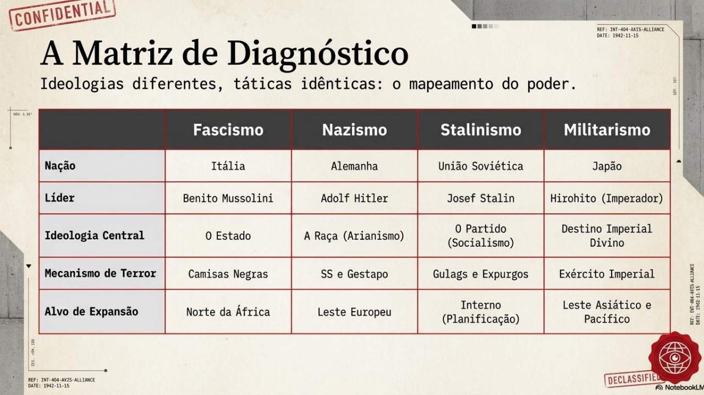
Política Expansionista: o caminho até a guerra
Veja, em ordem cronológica, como as ambições territoriais dos regimes totalitários foram se somando até tornar o conflito inevitável.
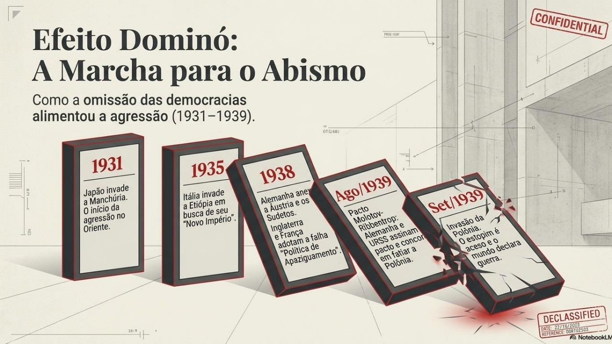
Japão invade a Manchúria, no norte da China, dando início à sua política expansionista na Ásia. A Liga das Nações condena o ataque, mas a condenação formal não impede o avanço japonês.
Tropas italianas invadem a Etiópia em busca de um "novo Império Romano" na África; em maio de 1936, ocupam a capital, Adis Abeba.
A Alemanha remilitariza a Renânia, região fronteiriça com a França cuja desmilitarização havia sido imposta pelo Tratado de Versalhes.
A Alemanha anexa a Áustria — o Anschluss ("união") —, confirmado por um plebiscito. O próprio Hitler era austríaco de nascimento.
Na Conferência de Munique, França e Inglaterra aceitam a anexação alemã dos Sudetos (região da Tchecoslováquia com população de maioria alemã), acreditando ser a última exigência territorial de Hitler — a chamada política de apaziguamento. Meses depois, a Alemanha ocupa toda a Tchecoslováquia, rompendo o acordo.
A Itália de Mussolini anexa a Albânia, na Europa, dando continuidade à sua política expansionista.
Alemanha e URSS assinam o Pacto de Não Agressão (Molotov-Ribbentrop), que incluía um acordo secreto para dividir a Polônia entre os dois países.
Tropas alemãs invadem a Polônia pelo oeste; dezesseis dias depois, tropas soviéticas invadem pelo leste. Dois dias após o ataque alemão, Reino Unido e França declaram guerra: começa oficialmente a Segunda Guerra Mundial.
Ataque japonês à base de Pearl Harbor. Os Estados Unidos entram na guerra, que se torna verdadeiramente global.
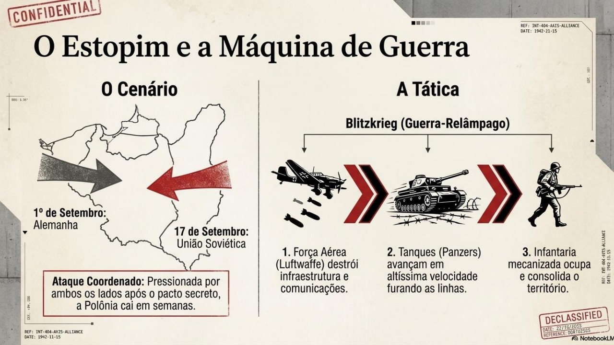
Estratégia militar alemã baseada em ataques rápidos e coordenados: primeiro os tanques blindados (Panzers) e a aviação (Luftwaffe) abriam caminho, depois a infantaria ocupava o território. Foi assim que a Alemanha dominou a Polônia e, até maio de 1940, também Dinamarca, Noruega, Holanda, Bélgica e França.
Perceba que cada uma dessas ações expansionistas foi tolerada ou mal contida pelas potências democráticas, que temiam um novo conflito de grandes proporções tão logo após a Primeira Guerra. Essa hesitação — sobretudo o apaziguamento praticado pelo Reino Unido e pela França — acabou dando tempo e confiança para que os regimes totalitários avançassem ainda mais.
Guerras Mundiais: por que elas começaram?
Vídeo da BBC News Brasil em que a repórter Julia Braun conversa com especialistas sobre os elementos-chave por trás da Primeira e da Segunda Guerras Mundiais — e até que ponto esses mesmos elementos ainda estão presentes no mundo de hoje.
Assistir no YouTube ↗Como as ideologias guiaram o conflito
A Segunda Guerra Mundial não foi apenas uma disputa por território: foi, em grande medida, um confronto entre projetos de sociedade radicalmente diferentes.
Pare para pensar: por que a Segunda Guerra Mundial foi tão mais violenta contra civis do que a Primeira? A resposta tem muito a ver com as ideologias totalitárias que você acabou de estudar. Elas não apenas motivaram a guerra — elas definiram como a guerra foi travada.
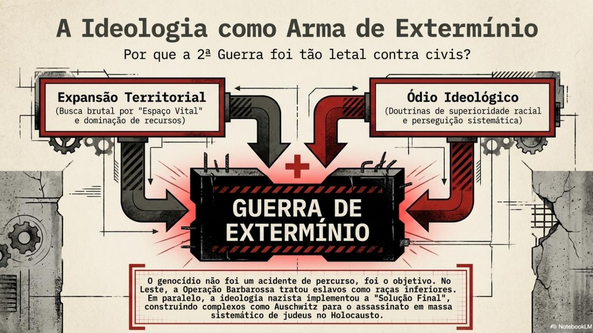
Na Frente Oriental, a invasão alemã da União Soviética em 1941 (Operação Barbarossa) foi conduzida como uma verdadeira "guerra de extermínio", já que os povos eslavos eram considerados racialmente inferiores pela ideologia nazista — o que resultou em um número de mortes civis e militares muito superior ao de qualquer outra frente do conflito.
Nos territórios ocupados, a perseguição sistemática aos judeus, iniciada com as Leis de Nuremberg, culminou, a partir de 1941-1942, na chamada "Solução Final": campos de extermínio como Auschwitz-Birkenau foram construídos especificamente para o assassinato em massa.
Enciclopédia do Holocausto
Para aprofundar seus estudos sobre o Holocausto — com verbetes, fotografias, depoimentos e mapas —, consulte a Enciclopédia do Holocausto do Museu Memorial do Holocausto dos Estados Unidos, disponível em português.
Acessar a enciclopédia ↗No Pacífico, o militarismo japonês, alimentado pela ideia de superioridade e destino imperial, também produziu campanhas de extrema brutalidade contra populações civis e prisioneiros de guerra nos territórios ocupados da Ásia.
Ou seja: entender as ideologias totalitárias não é um detalhe "à parte" da Segunda Guerra — é a chave para compreender por que o conflito foi tão mais destrutivo, e tão mais marcado por crimes contra civis, do que qualquer guerra anterior.
A Queda dos Regimes Totalitários
O fim da guerra não significou o fim do totalitarismo como fenômeno histórico — mas encerrou o ciclo desses regimes específicos.
- Itália (1943–1945): Mussolini é deposto em 1943 após derrotas militares e a invasão aliada; capturado e executado por partisans italianos em abril de 1945.
- Alemanha (1945): cercado em Berlim pelo Exército Vermelho, Hitler comete suicídio em 30 de abril de 1945; a Alemanha se rende incondicionalmente dias depois, encerrando a guerra na Europa.
- Japão (1945): após os bombardeios atômicos de Hiroshima e Nagasaki, o Japão se rende em agosto de 1945, encerrando de vez a Segunda Guerra Mundial.
- União Soviética: diferente dos regimes do Eixo, o stalinismo não caiu com a guerra — pelo contrário, saiu fortalecido, controlando boa parte do Leste Europeu e dando início à Guerra Fria. Stálin permaneceu no poder até sua morte, em 1953.
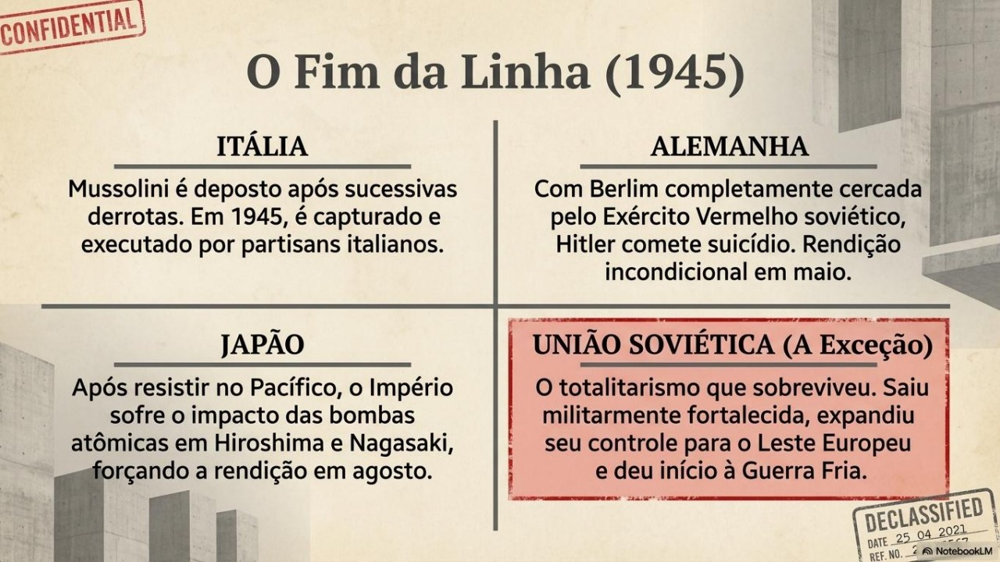
Os líderes fascistas e nazistas sobreviventes foram julgados no Tribunal de Nuremberg (1945–1946), que criou um marco histórico e jurídico ao responsabilizar indivíduos por "crimes contra a humanidade" — um conceito que até hoje orienta o Direito Internacional.
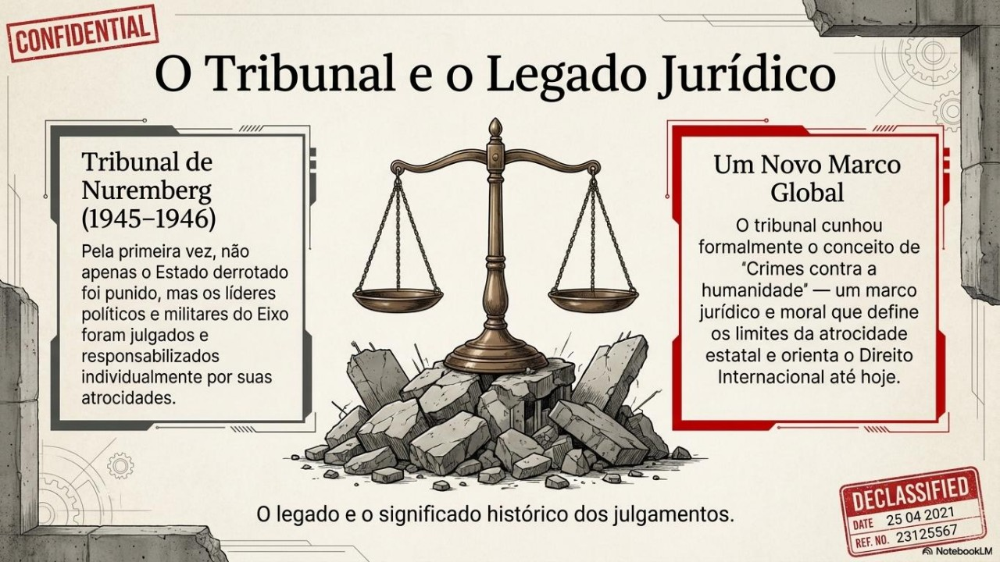
A derrota do fascismo, do nazismo e do militarismo japonês não significou, porém, o fim do autoritarismo no mundo: o próprio pós-guerra viu o fortalecimento de um novo bloco totalitário sob influência soviética, e a disputa entre capitalismo e socialismo definiria as próximas décadas na chamada Guerra Fria.
A tragédia de Hiroshima e Nagasaki
Vídeo do canal History Brasil sobre os bombardeios atômicos de Hiroshima e Nagasaki, em agosto de 1945, que levaram à rendição do Japão e ao fim da Segunda Guerra Mundial.
Assistir no YouTube ↗Totalitarismo em Perspectiva: teste seus conceitos
Complete as frases sobre os regimes totalitários e a Segunda Guerra Mundial no jogo interativo abaixo.
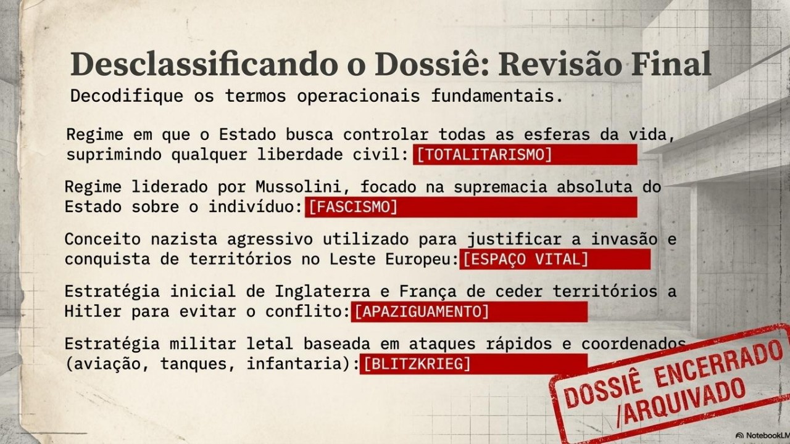
Glossário — complete as frases
Toque no espaço de cada frase para escolher o termo correto entre as opções. Quando terminar todas, toque em "Verificar respostas".
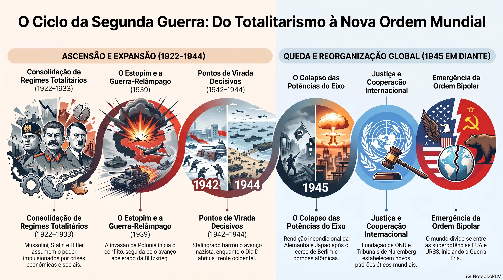
📋 Revisão Geral do Tema
Chegou ao fim do tema? Reforce tudo o que estudou com uma revisão completa: 10 questões dissertativas e 10 objetivas cobrindo todos os tópicos.
10 questões dissertativas + 10 questões objetivas, com correção automática e comentários do professor.